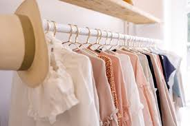
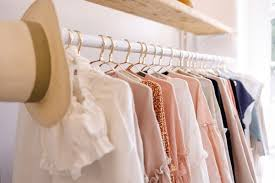
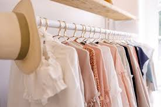
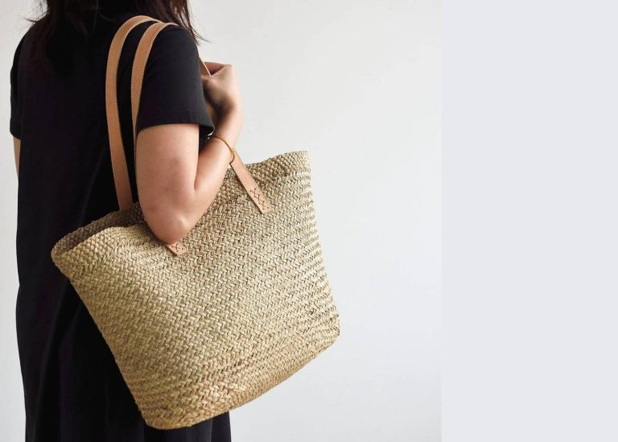
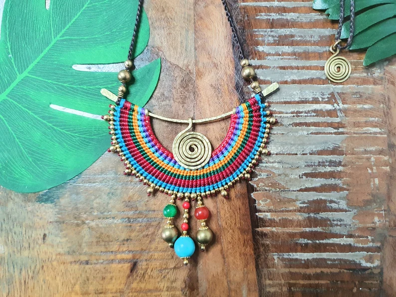
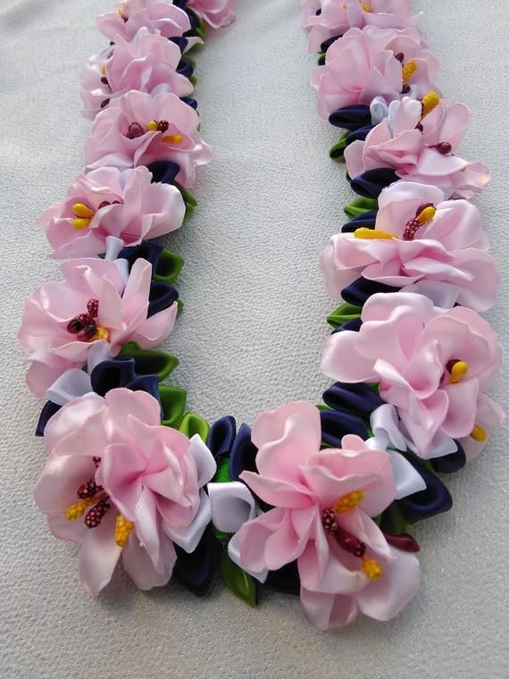

 Sustainability is no longer just a buzzword in fashion—it’s a movement. In 2024, more people are opting for eco-friendly and ethically made clothing. Here's how you can make a difference while staying stylish:
Buy Less, Choose Wisely: Focus on buying high-quality pieces that will last. Invest in timeless designs rather than trendy items that will fall out of style after one season.
Shop Secondhand: Thrift stores, vintage shops, and online resale platforms like Depop are fantastic places to find unique, pre-loved items that don’t cost the earth.
Opt for Natural Fabrics: Natural fibers like cotton, linen, wool, and silk are biodegradable and have a much smaller environmental impact than synthetic materials. Plus, they’re often more breathable and comfortable.
Support Ethical Brands: Look for brands that focus on ethical production, fair labor practices, and sustainable sourcing. These companies are making a conscious effort to minimize their environmental footprint.
Care for Your Clothes: Take care of what you already own. Wash clothes in cold water, air-dry them, and use eco-friendly detergents to ensure they last longer and don’t release microplastics into the environment.
By making small, mindful choices, you can build a stylish and sustainable wardrobe that helps the planet!
 Sustainable bags and shoes:
Choose products made from sustainable materials such as vegan leather, organic cotton, recycled polyester, or upcycled fabrics.
Ethically made jewelry:
Look for jewelry brands that use ethically sourced materials (e.g., recycled metals, conflict-free gemstones, or lab-grown diamonds).
Upcycled accessories:
Explore designers who upcycle materials (such as old denim or fabric scraps) into stylish, new items.



2. Buy Quality Over Quantity
Focus on buying fewer but better pieces. Investing in high-quality items means they’ll last longer, require less maintenance, and contribute less to landfill waste.
Look for durable materials:
Invest in clothing made from natural fibers like organic cotton, hemp, and wool, or recycled materials like recycled polyester.
Check the craftsmanship:
Inspect garments for well-made seams, strong zippers, and high-quality buttons, which ensure longevity.
Avoid fast fashion:
Fast fashion pieces are cheap but often poorly made and don’t stand the test of time. Opt for clothing from brands that emphasize quality production.